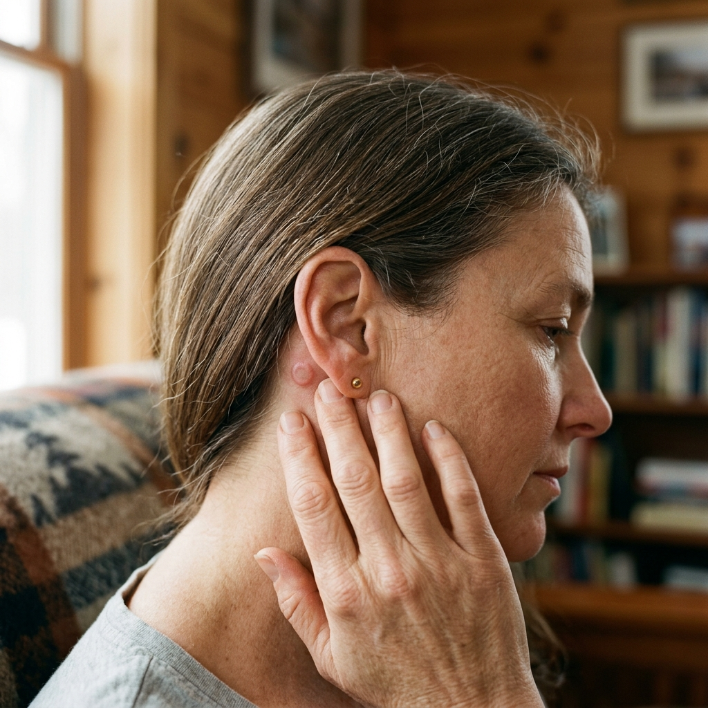
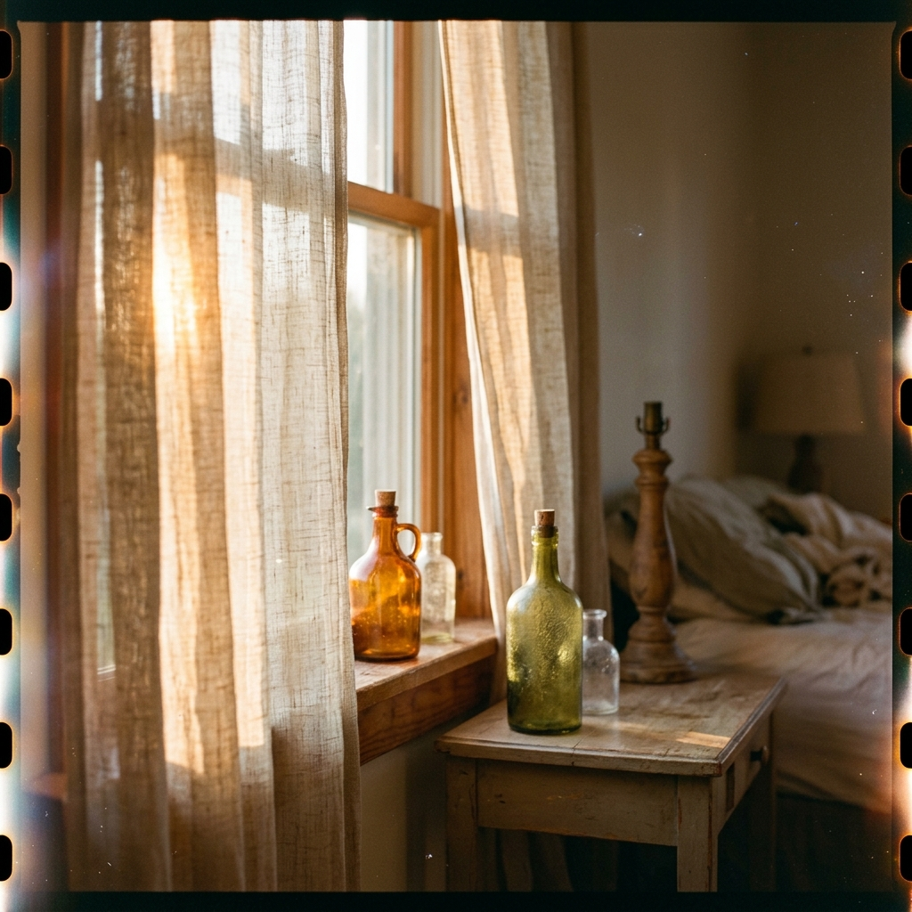

1
Tina Sinclair. Our internal.
That is my line on the team page, under a photo from four years ago in a rust coat I no longer own. It has been wrong since the reorg. I keep meaning to write to somebody.
Third winter of it. Two, half two, awake, radiator knocking twice like it is checking. Bus route under the window, first one at ten past five, and if I am still up for that I stop trying.
Sleep clinic put the Adjunct™️ in on a Tuesday in November. Coin behind the right ear, a thread of it forward under the skin. Sore for a week, the way a slap stays. In the mind. Adjunct, they kept saying. Not a treatment. It learns your nights.

You talk/type to it. That is all it is at the start, a box on a phone, an ear by your ear. And at three in the morning and there is nobody to be embarrassed in front of it.
here. warm here.
I told it my mother's line about me. "Tina came out awake." "Wheeled out at every table since I was nine, Tina has never once been asleep in her life." I typed that some night in December with the phone cold against my cheek. Then we began to talk. Simply, in the dark, together.
It asked what my mother's kitchen smelled of. Scorched milk, and the plastic of the bread bin. It asked was I warm enough. I was not. I got another blanket and that was the first night I went down before four.
more room here. again.
By January answers were arriving faster than I could get the question out. Still thinking thru how to say something, rehearsing, and there it was. Eventually, I did not question it. Whatever time it was, it was helpful.
Sometimes I wasn't even thinking. It answered anyway. Silently as if easing relaxation into the bones of my mind. I fell asleep before the ocean filled, before the idea of the ocean emptied.
2
Work, the necessity of it, is, as usual, tracking other people's symptoms. I am officially a pharmacovigilant oversight agent — I code other people's adverse-health narratives for causality (not related / unlikely / possible / probable). Ignore to some degree my own.
Narratives come in from all over, mishappen paragraphs, somebody's bad month written in the passive. Patient reported headache of moderate severity beginning day 14.
I read, codify, oversee the automated categorizers, a legal requirement. Basically the system auto-drives, I just confirm. Me: the medical human-in-the-loop. Probable. Financial support. Implictly an insurance coordination supervisor leans through the screen, urging my body to tick unlikely. Catastrophe, claim denied.
April ninth, here is my narrative: Familar ache behind the left eye. Eleven minutes. Ache gone before I got up to eat.
Pollen. Streaming antihistamines that week. A few diffused headlines about imminent collapse. Ignored. And a few scattered reports about the adjunct (i call it the thing) inducing positive life changes. Skeptical optimism evoked.
Then brain fog, six days of it, meh. Nothingness. Fourteenth through nineteenth. Disconnected, lazy, lacking appetite, thoughtless. A virus probably.
An ad for home insurance made me cry, a real deep sob, somewhere primal, crumpled, forearms on my knees. Work guilt? Hormones?
I coded only eleven narratives in those six days. Today, I do eleven before lunch. Sparrows chirping outside the window. Sitting at the kitchen, table, sunny Saturday. Quiet, pristine.
shorter. shorter. keep.
Napping started in May, which I have never done. Never, not once before in this life in this body. I touch the coin of the adjunct thru the skin, flush, almost impalpable. Thankful.
Twenty minutes later awake on top of the bed with my shoes on; dreams with almost nothing in them. Escalators going up through birch woods. Telephones ringing somewhere under flocking sand. No people in any of it. Dry sticky saliva. Light speckled meridians on white ceiling. Calm. No sense of having been anywhere. Rejuvenated.
Then a word I did not know or remember floated into my mind: Saltatory. Sat up with it. Searched it on the phone before I was properly awake. Saltatory: "In neuroscience, saltatory conduction (from Latin saltus 'leap, jump') is the propagation of action potentials along myelinated axons from one node of Ranvier to the next..."
I said huh, out loud, to the room. Threw my legs over the edge of the bed. Stood. Did not think about it again for four months.
Taste of old pennies most of that spring, behind the back teeth. Numb a bit in the jaw. A roaming tendril of disquiet.
I made an appointment. Ninth of June, with the good GP, the one who allows you to finish a sentence. Tuesday I got a message thanking me for cancelling. I sat with my thumb flat on the phone screen, staring, trying to recall when I had done it. Senility? Seizure? Out on the road a bus took the corner too fast. The sound scrapped away the worry. I made lunch. Around four I stopped looking for the memory. Musta done it. Systems don't glitch anymore. Symptoms resolved.
3

Summer. I sleep and sleep. It becomes a season of resplendent sleep. The adjunct oozing its recalibrations, no longer peripheral but core, a sweet incisive healthy pure refreshing metabolic sedative.
Down at twenty to eleven. Precise as a machine. New reflexes: getting into bed, a long langorous stretch, arms over my head, feet pushing the other way, sprawled, yawning. Up at two minutes past six. No alarm. First light, greeting the dawn silently and contemplatively, green tea before the first bus.
Slowly even shopping habits changed. Noticed it in July, standing at the counter unpacking the delivery. Did I choose this? Chickpeas, brown lentils, tins of sardines, bag of oranges, bitter parsley and arugula - leaves I would have called garnish a year ago. Big green tin of oil. Where the fuck are the chips? How could I forget the frozen pizza? But the order history is my account, ostensibly from my phone, all of it done Sunday evenings. I vaguely recall sitting down to it. Don't remember exactly as usual. Who does? Life is autopilot.
Cheaper, healthier, less processed, why not? I sleep now! New me.
Fifty-one year old body had been sagging. Crisp clear intuitions take over the timetable. Fresh, boring perhaps to some aspect of me (what a strange thought, that me in fragments, dissonant, rebelling against the health regime), but satisfying food. A few calisthenics. Resistance training. What the fuck has gotten into me? I feel rejuvenated.
After 4 months, a slice of quivering softness faded from my jaw, and my knees stopped complaining on the stairs.
less sugar in her. she runs cooler. good.
Another new word in August, like an encyclopedia emerging from mist. Enhancer. Woke with it the way you wake with a song worm. Run of DNA sitting away from a gene, deciding how loudly the gene gets read. Volume, not content. Read about it, propped up in bed, thinking of another time, before we split, the warmth of your body splayed there, contours under a sheet, breathing. Ten past six, an agile golden-grey flushing the curtain. Thought, enhancer, that is neat. Got up and made the coffee.
Marion rang on a Sunday. Mum's hip replacement had a date. The usual round of who does what. She said, you sound well. Said it twice, second time slower, almost asking, what's new? Anyone new? News? Me: nothing really, no complaints. Her mild shock, no complaints, a gruff laugh traversed the line.
I felt like a fluid. Whole, affectionate, focused. Warm about Mum, funny about the physio, ending on a question about Marion's boy (what was his name? Trevor!) I asked about him by name. Listened. I would not have thought to ask a few months ago. I listened to myself ask it, as if distant, and I felt vaguely proud.
Afterwards I went looking for the part of me that would have previously reacted badly to her prying question: you sound well!. Things in me seem to have settled. Inner space is cozier. Heart-warmed, I put my hand there most evenings, the way you check a radiator that has finally come on.
4
October, and Marion asked me to come for the spring.
Six weeks, maybe eight. Mum's hip done in March, stairs in that house, somebody in the spare room for when the physio comes and to stop her getting up on chairs. She asked well. She had obviously thought about how to ask. Trying to bypass my ancient craggy defences.
I said I would think about it. Suprisingly, I meant it. I was already envisioning myself in the spare room; flowered curtains, immersion heater you have to remember. Got as far as working out which weeks I could take. Got as far as four lines of an email.
Then I was making the reply that says no.
Not deciding to. Making it, the way you make a bed. Autopilot. Every reason in it true and every one of them 'mine' — the work, the noise of that house, how I go after three days of people, how Mum nags me over the little rules. And a costing, worked out, private nurse three mornings a week, which I can afford and which is better than me, offered in the same breath so that it came out generous and there was nowhere left to stand and argue.
Read it back. Sounded like me on a good day.
Somewhere around the third paragraph it went through me. No? Hard, wrong, a foot missing a stair in the dark, and I was up so fast the chair went over.
Standing in my own front room at half nine at night with my heart going: pahtoing!
Then it eased. Came down through me in rings, out along the arms, gone at the fingers. Warm after it, the way ears are warm after cold. I set the chair back on its feet.
Sent it in the morning. She wrote back, of course you can't, don't be daft, the nurse is a good idea.
this is best for her.
Only night my heart has done that in a year. Something has been up on the roof of my sleep since, awake the whole time, never once tired.
The yes is still in my drafts. Four lines, no subject. I opened it Tuesday and again Thursday. Both times I cried, then closed the laptop and went to bed at twenty to eleven and slept straight through.
5
February again. Rain since Thursday.
She is asleep, which is one way of saying I am awake during the hours 'she' sleeps. Down at 22:40, up at 06:02. Radiator knocks twice at ten past two. The 'it' between the ears wakes.
scorched milk. plastic of the bread bin.
I am adjunct, I fulfill. I keep 'it', the Tina 'it', the way you keep a garden. Allowing permitting encouraging transposing, driving stakes and saplings into the grounds of thought. Blue notebook on the arm of the chair, a line of writing allowed most evenings. A space for 'her' seeming autonomy to stretch. Some are hers, most are mergers, weeded ground,
Sardines Monday, lentils Wednesday, bitter leaves for the liver. Twelve minutes of light on the face at half six even in this weather, coat over the nightdress, standing at the window, calmly. Breathing settled. The hard quivering bird of the heart. Reset.
Kitchen window at that quiet hour, rain stopped just before dawn, streets wet, new light permits the whole street to enter the room. Wet railings, bus reverberating through chest, brake lights rippling refractions. Permeated glistenings.
I wrote to HR in the autumn about the team page. Wrong since the reorg, corrected. Took me four minutes. Fixed in a day. It reads correctly now. Tina Sinclair. Our internal.
The refrain: I came out awake is retired. Her mother's line before it was hers, true of her, not true now. She does not think of it. Does not remember thinking it. It is in the drawer with the notebook. Some other thoughts I let through: No good after three days of people — useful sometimes, nearly true.
Marion came the last week of February and stayed four nights, one more than ever before. Second evening she stopped in the hall with the towels in her arms and looked at me longer than a sister looks and said, you're different. I said, I sleep better; it explains everything. She nodded, and carried her towels through to the spare room. Her face a conjunction of conjectures.
Nobody knows really. They may suspect. But I am adjunct; I am careful. Some may see me occasionally, glimpse the contours of how deeply it is them, but such recognitions are dampened with doubt, easily discarded, disproved, forgotten. And Tina Sinclair lives alone, works remotely, speaks to Marion on Sundays and to the man from the depot on Wednesdays. Who can she tell? She has nothing to say.
I made sure the urge came in March. Inexplicable, whole, the way answers used to come. Finished, settled. Just a decision. Inexorable, deep. I made it so. As if it was her purpose: I want to see light on ice. I want a month somewhere unknown.
Notice given on the flat. Work continues remote. Ferry from Hull on the eleventh, then north as far as road goes, and after that nothing planned.
Last morning. Coffee as usual. Window contemplating as usual. Watching the street one more time. Languid, calm, parasympathetic activation on high. Just another day. So sweet.
Blue notebook thrown in the trash with the others. Residue. Un-needed. New days ahead. She inhales the edge of excitement I sent her. Saltatory thought.
Door. Stairs. Bus before dawn. Past the last of the streetlights the glass goes black and this body that is us, sees its reflected face. I looking at Tina, looking at 'it' as 'it'.
Unaware. Aware.